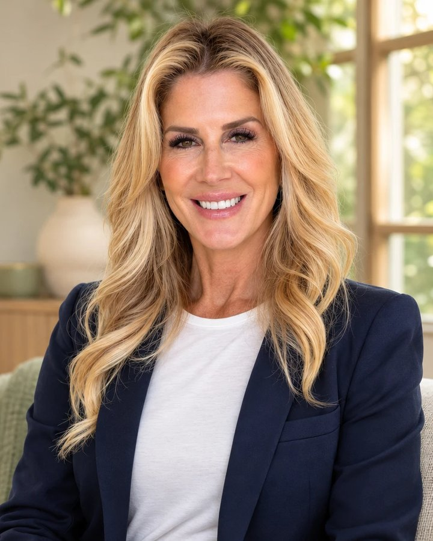

Your best chapter isn’t behind you.
Therapy for Women Navigating Divorce and Midlife Change
Support for anxiety, loss, the empty nest and rebuilding your confidence, with Dr. Susan Besman, Ph.D., LMFT. In person in Boca Raton and online throughout Florida.
Free 15–20 minute call · What happens next

- Ph.D., Licensed Marriage & Family Therapist
- 25+ years of clinical experience
- In person in Boca Raton · Online across Florida
- In-network insurance via Alma
Something has ended, and you’re not sure what comes next.
Divorce changed everything.
Your marriage has ended or is ending, and your home, finances, routines, and friendships are shifting all at once.
You’re not sure who you are now.
For decades you were a wife, a mother, the one who held it together. Those roles have changed, and you’re asking what’s yours.
The house is quieter now.
Your children have grown, your days look different, and you’re not sure what fills the space.
You’re ready, but overwhelmed.
You know you want change. You just don’t know where to begin.
You don’t have to figure it out alone, or all at once.
I didn’t just study reinvention. I lived it.
I’m a Licensed Marriage & Family Therapist with more than 25 years of clinical experience helping individuals, couples, and families through life’s hardest transitions.
When my own marriage ended, I used the tools I’d taught clients for years to rebuild my routines, my confidence, and my sense of who I was. That experience, together with decades of clinical work and training in how people change, shaped the REBUILD Method™, the framework I use with clients today.
I help with divorce recovery, midlife & the empty nest, anxiety, couples counseling and co-parenting, in person or online anywhere in Florida.
How the REBUILD Method™ helps.
Our sessions focus on what helps you feel steady and move forward: calmer days, clearer boundaries, renewed confidence, healthier routines, and a real sense of direction. The REBUILD Method™ is the framework I use to keep our work focused, so you always know what we’re working on and why.
What it looks like in our sessions
Start with what feels most urgent
We begin with what’s weighing on you most right now, whether that’s sleep, a decision you’re facing, or a wave of grief.
Practice boundaries
We plan and rehearse the conversations that feel hardest, with a former spouse, adult children, or family.
Rebuild your routines
We look at the daily habits, such as sleep, movement, and time with others, that help you feel steadier.
Decide with more confidence
We slow big decisions down so you can make them from clarity rather than fear.
The REBUILD Method™ is for midlife women who are done being defined by their past and want to design a next chapter they’re genuinely excited to live.
The REBUILD Method™ is informed by established approaches in psychotherapy and by my own experience of rebuilding. It is a framework for our work rather than a separately validated treatment, and individual results vary.
What happens when you schedule.
Book a free call
The button opens my secure Alma page. Choose a time for a free 15–20 minute consultation.
We talk
I’ll ask what’s going on and what you’d like to change, and answer your questions about how I work.
Decide together
If we’re a good fit, you book your first session and complete intake forms through Alma. If not, I’ll suggest other options.
Common questions
How soon can I get an appointment?
Current openings appear on my Alma page when you book. If you don’t see a time that works, call (561) 445-4787.
Are sessions in person or online?
Both. Sessions are in person at my Boca Raton office, or by secure video for anyone located in Florida.
What does therapy cost?
The consultation is free. Private pay is $200 per individual session and $250 per couples or co-parenting session. In-network insurance is billed through Alma, and your copay depends on your plan. Wellness coaching is billed separately from therapy.
What happens at the first appointment?
Before your first session, you’ll complete intake forms through Alma. In the session, we talk about what brought you in, your history, and what you want to be different, and we agree on where to start.
Rebuilding After Divorce
A short, practical guide to your first steps: steadying yourself, sorting the decisions in front of you, and beginning to rebuild.
No spam. Unsubscribe anytime. See the Privacy Policy.